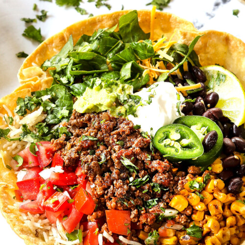

Taco Bowl

The most delicious ground beef with taco seasoning over a bed of white rice and topped with avocado, corn, tomatoes with cheese and sour cream. Perfect for taco Tuesday!
Ingredients List
- 1 pound taco meat
- 1/2 cup of white rice
- Salt and pepper
- 2 Tbsp cilantro
- 1 cup corn
- 1 tbsp of butter
- 1 avocado
- 1/4 red onion
- 1 cup of tomatoes
- 1 cup shredded cheese
- 1/2 cup sour cream
- Hot sauce or sriracha
- 1 lime
Steps to make!
- Prepare Taco Meat
- Cook white rice. Drain and drizzle with lime juice
- In a skillet, saute corn with 1 Tbsp of butter
- Prepare all the desired topping from the list above. Slice the onions, cut the avocados and cube the tomatoes
- In a bowl, arrange all the ingredients for this taco bowl
- Enjoy.
Return Home